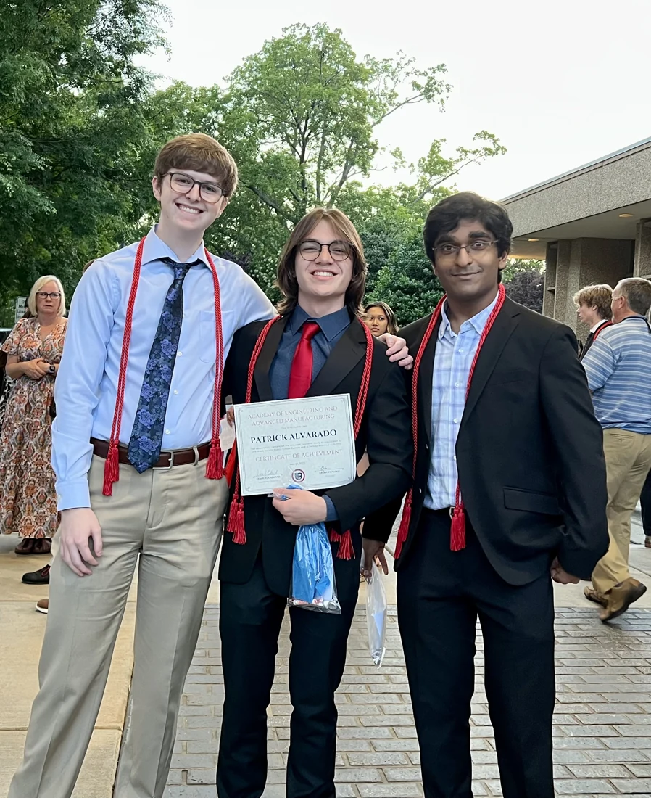

Four years of engineering in one cohort
My time at Apex Friendship High School coincided with rapid growth in Apex, from roughly 5,000 residents in 1990 to more than 60,000 by the time I wrote this account. My sister’s graduating class was just over 400 students. Three years later, mine was just under 750, and the school had nearly 3,000 students. The Academy of Engineering and Advanced Manufacturing gave me a smaller community within the school.
The academy kept a cohort together with a core group of teachers over four years. Each year included an engineering course structured around Project Lead The Way. One project connected three classes: we read Andy Weir’s The Martian in English, designed space habitats in science, and built model rockets in engineering. Diane Cadavid led the academy for eight years, through my graduation.
The shared projects became less frequent as we moved into advanced courses with prescribed curricula. I completed seven AP courses: Calculus AB, Calculus BC, Physics C: Mechanics, Macroeconomics, Computer Science Principles, English Language and Composition, and United States History.
Capstone: an enclosure that beat a commercial cooler
The academy taught practical skills alongside engineering, including résumé writing, LinkedIn profiles, and mock interviews. In the senior capstone, my partner and I defined a real-world problem and prototyped an insulated enclosure for electronics stored in a car. In our tests, our enclosure performed better than the Igloo cooler we used for comparison. That class also brought me closer to other academy students I already knew. We later became suitemates at NC State.

NTHS president, and a first job in aviation
I served as the academy’s senior representative and volunteered at its new-student orientation for three years. I joined the National Technical Honor Society as a junior and served as president my senior year, when a change in school administration limited the events I could organize.
Graduation from the academy required a 120-hour internship. Several of my first applications went unanswered, and one company declined. An older student in AP Computer Science Principles who worked at LifeStyle Aviation suggested I apply to LifeStyle Aviation. That opportunity gave me my first experience in the aviation industry and led to later work in market analysis and data integration.